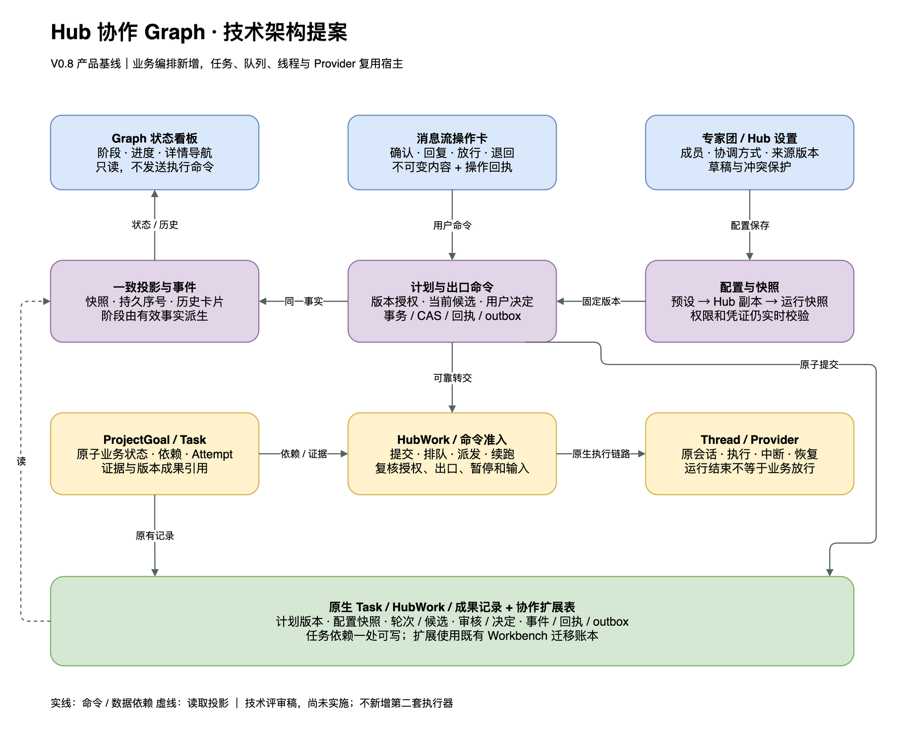

Hub 专家团与协作 Graph 技术方案 V0.8
技术评审稿 · 未实施目录 · 17 个章节
日期：2026-10-22｜状态：技术评审提案，尚未实施｜产品基线：PRD / 交互原型 V0.8。
阅读版 · 产品 PRD · 交互原型 · 主评审 · 可编辑架构图
1. 技术结论与边界
在现有 Hub 上增加“协作计划”业务模块，复用 ProjectGoal、ProjectTask、TaskAttempt、HubWork、Thread、Expert 快照及成果库。Graph 是任务与阶段出口的业务投影；模型内部 Plan 继续表达单个 Agent 的执行步骤。新增模块管理配置、计划版本、审核轮次与放行，不建立第二套执行器。
首个可用交付采用“一份已确认计划对应一个 ProjectGoal，一个 Hub 同时一份活跃计划”。支持多份草稿和历史计划；并行审核发生在同一计划内。多计划同时运行安排为独立后续交付，必须先改造现有单 Goal 假设。这是实施切片建议，不删除 PRD 的多计划目标，也不宣称首期已覆盖全部 V0.8。
本方案的核心规则：
- Task 状态与依赖只有一个可写来源；阶段状态由当前任务结果、审核和有效出口决定计算。
- 专业任务验收、用户阶段放行、Provider 工具审批是三种不同动作。
- 人工授权绑定计划版本与固定成果，服务端执行门禁同时覆盖排队、派发、续跑和直接命令路径。
- Graph 只展示状态和导航；业务命令在消息卡片中发出；历史内容不可被新状态改写。
- 授权、暂停、结果、回执持久化；断线或请求超时不等于操作失败，也不能据此重复启动工作。
应用代码与配置未改动；本次设计不更改 Provider、模型选择、安装或发布。源码证据固定于
93c751172091495c3b26991b92624cd6571a92fb。下文标“拟新增”的名称是设计接口，不是现有可调用能力。
2. 已有基础与必须补齐的能力
| 范围 | 当前事实 | 本次设计 |
|---|---|---|
| 目标与任务 | Goal 有 scopeVersion / revision；Task 有依赖、review / done、尝试与证据 | 给已确认计划关联 Goal；补版本授权、阶段出口与当前轮次关联 |
| Goal 数量 | 数据库唯一索引限制每个 Hub 一份 active / paused Goal；服务也检查此限制 | 首期保留；多计划交付同时升级索引、查询与所有隐式 Goal 选择 |
| 授权版本 | scopeVersion 当前可由 updateGoal 输入覆盖，未发现 HubWork 派发按它校验 | managed 计划由服务端单调递增，禁止客户端任意赋值；执行绑定 scopeVersion |
| 验收 | Coordinator / 用户可以凭 evidence 接受 Task；Worker 不能将 Task 置 done | 保留原子任务验收；为 managed Task 加当前 attempt / 输出校验，不能绕过阶段人工出口 |
| 工作队列 | HubWork 有持久队列、批次去重、原子占槽、创建回执与生命周期恢复 | 复用；增加 plan / task / attempt 绑定与执行前门禁，不另建队列 |
| 成果库 | 有 collection revision、固定版本读取、文件摘要与来源 | 只增加候选、审核与决定的关联，不复制文件或建立平行成果库 |
| 事件 | projectAgent 有 snapshot、task / work-item 等更新事件；当前事件没有统一持久序号 | 给协作模块增加持久事件序号、重放与一致快照；沿用同一传输与连接管理 |
| Plan UI | 进度组件是 pending / inProgress / completed；提议卡是 Markdown 及复制、保存、导出 | 复用基础组件；新增 Graph 业务视图，不把导出变成授权 |
| 扩展迁移 | Workbench 独立迁移账本，当前模块白名单为 expert / context | 在既有 expert 扩展目录追加 Hub 迁移；不假定可直接注册任意模块 |
具体文件与定位见第 17 节。代码静态核验不代表真实模型、重启或跨平台运行已验收。
3. 模块划分与宿主边界

| 层 | 拟新增职责 / 位置 | 使用的现有能力 |
|---|---|---|
| 契约 |
packages/contracts/src/hubCollaboration.ts：配置、计划、命令、投影、事件
Schema
|
复用 ProjectId / TaskId / ThreadId、成果引用类型；无运行逻辑 |
| 前端业务模块 |
apps/web/src/features/hubCollaboration/：GraphBoard、StageInspector、ActionCard、配置表单及投影选择器
|
宿主注入窄客户端、线程导航、成果查看、连接代次；不直接导入宿主内部 store |
| 前端接入 | apps/web/src/workbench/host/hubCollaborationClient.ts 等静态适配 |
现有 NativeApi / WS transport、聊天消息扩展点、Composer 和 Settings 外壳 |
| 服务端业务模块 |
apps/server/src/hubCollaboration/：计划校验、事务命令、出口计算、配置版本、投影、持久动作待办
|
现有 SQL 连接；经窄的 Task / Work / Expert / Context / Deliverable 能力访问宿主 |
| 服务端宿主适配 |
apps/server/src/workbench/host/hubCollaboration.ts：装配运行层与执行门禁
|
ProjectAgentService / Repository、HubWorkService / Gateway、原生命令准入与 Provider 生命周期 |
| 持久化 | 协作扩展表及查询仓储；原子任务仍在原有表 | 共享 SQLite 事务、启动迁移、备份与恢复；无独立数据库连接 |
模块 ID 建议 hub-collaboration，迁移归属仍为现有
expert 扩展系列。业务模块只依赖显式能力接口，例如
TaskAccess、WorkAdmission、ExpertSnapshotReader；这些为拟新增窄接口，不是通用插件
SDK。状态推导与校验保留在服务端模块，前端只处理显示选择和临时草稿。
未来实现必须登记 workbench/integration-points.json 的 featureRoots /
featureFiles 与精确宿主接缝。现有边界检查仅覆盖其登记的静态依赖，不能据此宣称运行隔离。
4. 配置生命周期与创建一致性
配置链为：专家团预设 revision → 当前 Hub 配置副本 revision → 已确认计划配置快照。Expert 的定义与不可变快照继续由现有 ExpertStore 管理。
| 数据 | 归属与规则 |
|---|---|
| 团队预设 |
拟新增 hub_team_presets 及
hub_team_preset_revisions；名称、用途、expertIds、可选
coordinatorInstructions、协作偏好；CAS 保存、归档，不硬删已引用版本
|
| Hub 配置 |
拟新增 hub_collaboration_configs /
配置版本记录；collaborationMode、coordinatorInstructions、presetSourceId /
revision、schemaVersion、revision
|
| 当前成员 |
继续以
hub_expert_participants
为当前成员来源；修改成员和协作配置在同一事务中提交，版本快照只做不可变历史，不另建可编辑名单
|
| 计划快照 | 固定 Hub 配置 revision、成员 Expert snapshotId / revision、协调方式、协作偏好及生效模式；不复制凭证，不冻结权限授予 |
| 旧 Hub | 无扩展配置视为 legacy；沿用当前行为，不自动升级为严格专家团模式，也不自动把旧 Goal 认成已确认 Graph |
普通模式允许显式普通 Worker 目标；专家团模式要求任务绑定当前计划快照内可用专家，不能因无匹配而静默降级。缺成员可保存配置并显示缺口，但计划确认与每次运行准入仍校验必需能力。显式归档、权限撤销及必需连接失效可以阻止新执行；历史快照仍可读，不能用快照绕过撤销。
预设编辑、Hub 配置、计划修订分别使用自己的 expectedRevision。恢复默认只清空协调方式草稿；保存后生效。当前 Hub 保存不改活动计划；“另存为专家团”产生新预设 ID，仅复制允许的配置字段。
创建 Hub 继续复用“建立项目容器 → configure Coordinator”的原路径，新增 requestId 及创建过程记录，按相同项目 ID 重试。容器成功但配置失败时标记未完成，保留草稿与可恢复入口；重试不重复创建项目或 Coordinator。取消不自动删除已有数据。创建可建立 Coordinator 及欢迎消息，但配置为新协作模式时，heartbeat / Playbook 只能组织讨论和提议，未确认不得派发正式工作。
5. 计划、任务与依赖的单一来源
拟新增 hub_plans 保存
planId、hubId、goalId（草案为空）、activeRevision、pendingRevision、controlState、stateVersion、eventSequence。hub_plan_revisions
保存不可变的目标、授权范围、顶层阶段、节点定义、出口规则、预算、配置快照和内容摘要。
草案中的 nodeKey 是提议身份，还不是可运行 Task。首次确认在同一事务中创建 Goal、映射
ProjectTask，并写入原生依赖表；hub_plan_task_bindings 记录 plan / revision /
nodeKey → taskId / role / stageKey。后续版本复用未变化的任务身份；新增工作创建新
Task，移除工作取消未启动尝试并保留历史关联。
当前有效依赖只由原生 project_agent_task_dependencies 提供。
计划版本里的边是不可变授权快照，不能独立编辑或直接驱动派发。确认 / 修订事务一次性校验
DAG、同 Hub 同 Goal、阶段归属和完整引用，然后写 Task
与依赖；运行前核对其摘要与活动版本。阶段连接由跨阶段的任务边聚合得到，不维护另一套可写阶段依赖。确认与修订必须同时校验
Task DAG 和聚合后的阶段 DAG：例如 A 阶段含 A1 / A2，B 阶段含 B1，任务边 A1→B1→A2
虽无环，但聚合后 A→B→A
会导致出口互锁，必须拒绝并要求拆分阶段。未连接的阶段可以并行，放行数按各阶段事实计算。
原仓储 saveTask 先写行再替换边，当前调用链未构成完整的跨对象提交。本功能需要在共享 SqlClient 上增加事务级应用能力，把计划 CAS、Goal scopeVersion、Task 更新、依赖、决定、回执及事件一起提交；禁止简单串联多个对外 RPC 冒充事务。对 managed Task 的旧 create / update 入口，涉及范围、依赖、角色、归属的变更必须转为计划修订或拒绝。
每个 Task 仍只维护既有业务状态。hub_task_attempt_bindings 补充原生
attemptId、workItemId、planRevision、stageGeneration、授权代次、输入摘要和运行身份；不复制
attempt outcome 或 HubWork state。候选尚未开始时允许只有节点绑定，真正派发时才建立尝试绑定。
6. 原子任务验收与阶段出口
关键区分：作者 Task 的 done 表示“本轮约定的产出任务已有证据验收”，不表示整个“方案与审核”阶段已放行。作者完成后，审核者才可沿原生依赖启动；所有必要审核完成且通过后，才进入用户出口。这样不需要把审核边改成循环，也不需要创建虚假的“用户审批任务”。
| 顺序 | 原子事实 | 组合阶段状态 |
|---|---|---|
| 作者运行 | author Task running，HubWork working | 进行中 |
| 作者提交 | attempt 报告 + 固定成果；Task review 等技术验收 | 提交待检查 |
| 候选被接受 | 校验本轮成果可读取、来源和验收证据后，author Task done | 审核中；允许 reviewer Tasks 启动 |
| 审核返回 | reviewer Task 完成，独立记录 pass / changes_requested / blocked | 并行 all 未齐继续审核；任一需修改则进入修订 |
| 必需审核均通过 | 所有结论绑定同一候选摘要和当前轮次 | releasePolicy=user 时待用户确认 |
| 出口满足 | 用户有效批准，或 auto 策略的确定条件满足，写 ReleaseRecord | 已放行；跨阶段后继才具备派发条件 |
Task.review 继续表示结果待接受，不能用它表达“审核专家正在运行”。审核专家可在 Task.done 时给出 changes_requested，这表示审核工作已交付，但方案出口失败。自动出口只能依赖确认时定义的结构化检查与验收记录，不是任意模型文本声称成功。涉及主观标准时由已配置的审核任务给出结构化结论。
拟新增记录：
| 记录 | 最小绑定 / 唯一性 |
|---|---|
| Candidate | planId、stageKey、stageGeneration、authorAttemptId、固定成果引用集合、outputDigest；同轮一个当前候选，旧候选不可覆盖 |
| Review | candidateId、outputDigest、reviewerTaskId / attemptId、结论、反馈引用；每个必需审核任务每轮一个有效提交，重试须内容相同 |
| Decision | planId / revision、scopeId、stageKey / generation、candidateId、outputDigest、approve / return、comment、requestId、服务器 actor / time |
| Release | 当前有效 revision / stageGeneration、auto / user、依据决定或条件摘要；有效性派生，撤销通过新增失效记录，保留历史 |
outputDigest
对排序后的固定引用及内容摘要做规范化摘要，不散列可变“最新”地址。成果文件继续存于既有库。缺少文件、读取失败、摘要不符、权限变更时阻塞放行和派发。
退回递增 stageGeneration，新增返工记录和原作者新尝试；原作者线程优先续用。新候选出现前审核任务不能复用旧结论；重新运行同一审核任务的新尝试，旧 evidence 仍保留但不计当前验收。当前轮次任务复位、出口失效、受影响下游 hold 必须在同一事务完成。自动返工次数由服务端按已确认预算扣减，Agent 不能重置；超限等待用户调整计划。
已放行数 = 当前活动 revision 下有效 Release 的顶层阶段数。审核分支和尝试不计分母；待确认修订不改分母。需求自动放行后为 1/3，方案专业审核通过仍为 1/3，用户放行方案后为 2/3；只批准方案的计划终态为 2/2。
7. 命令契约、身份与幂等
拟新增 typed RPC 使用 hubCollaboration.* 命名，接入既有 ws / rpc /
NativeApi。每个写命令包含 requestId、owner scope 与适用的 expectedRevision /
expectedStateVersion。服务端检查字段的长度、数量、引用和业务权限；首期建议限制 12
个顶层阶段、64 个原子任务、每阶段 8 个必要审核分支、协调方式 8000
字符，作为可调整的工程上限，不改变现有 Worker 并发配置。
| 命令 | 调用者 | 效果 |
|---|---|---|
| team.list / read / save / archive | 用户设置页 | 版本化预设管理 |
| config.read / save | 用户 | 当前 Hub 副本保存；不更改活动计划 |
| plan.propose / revise | 用户或 Coordinator | 结构化提议；不授予执行权限 |
| plan.confirm | 经宿主认证的用户会话 | 固定内容摘要、配置与执行范围；原子创建 / 更新 Goal、Task 和授权 |
| stage.decide | 经宿主认证的用户会话 | 指定候选 approve / return；用户出口不能由 Agent 调用 |
| task.submit / review.submit | 对应任务的 Worker 或受托提交通道 | 写本轮结果 / 结论；不自行批准用户出口 |
| input.respond | 用户 | 回答指定 inputRequest；只进入指定线程，不批准计划或成果 |
| plan.pause / resume / cancel | 用户；系统可施加安全 hold | 控制执行；放宽 hold 或恢复不得扩大原范围 |
| plan.getSnapshot / list / events | 有 Hub 访问权的调用者 | 获取一致投影与历史；不触发执行 |
| command.getReceipt | 原操作可访问者 | 超时 / 重连后查询结果，避免换 requestId 重发 |
stage.decide 示例仅表示拟新增契约：
{
"hubId": "hub-1", "planId": "plan-1", "planRevision": 1,
"scopeId": "solution-exit", "stageKey": "solution", "stageGeneration": 2,
"candidateId": "candidate-v2", "outputDigest": "sha256:...",
"expectedStateVersion": 18, "decision": "approve", "requestId": "uuid"
}不接收客户端声称的 actorKind / userId / approvedAt。现有业务 principal 的 user 只有类型没有持久人员 ID；新增决定需由宿主认证上下文记录可验证的本地 owner / session 标识及 actorKind，不伪造多租户身份。批准命令显式要求 owner 会话，Agent Gateway 不暴露用户专属批准工具；已存在的 Goal / Task 写入口对 managed 对象也要走同一策略，不能通过旧 RPC 获得旁路。
事务内按 (hubId, requestId) 去重，存规范化 commandDigest 与完整结果回执。同 ID
同内容返回原回执；同 ID 不同内容返回
IDEMPOTENCY_CONFLICT。幂等检查先于版本冲突检查，保证已成功操作的重试可取回原结果。版本冲突返回最新版本与可重新读取的对象，不自动替用户批准新内容。
建议明确错误码：REVISION_CONFLICT、STALE_CANDIDATE、SCOPE_NOT_AUTHORIZED、DEPENDENCY_NOT_RELEASED、CAPABILITY_UNAVAILABLE、INPUT_UNAVAILABLE、THREAD_BUSY、PLAN_PAUSED、REVISION_PENDING、IDEMPOTENCY_CONFLICT。前端保留草稿并说明可恢复动作；不得把所有失败统一显示为网络重试。
8. 执行准入与所有旁路
拟新增服务端
assertManagedWorkAdmission，由宿主在原有命令准入点调用。校验必须包括：活动计划
/ scopeVersion 有效、Task 属于当前绑定、Hub / Goal / plan 未暂停取消、无修订 hold、任务前置
done、跨阶段前置 Release 有效、固定输入可访问、Expert / Provider
能力可用、线程没有另一活动工作、预算与队列资源允许。
| 路径 | 必须接入的位置 |
|---|---|
| 新 Worker | HubWork submit 校验请求；持久记录绑定；claim / start 和 createThreads 的 assertAuthority 再校验 |
| 旧线程续跑 | follow-up admission、队列 promotion、实际 turn.start 共享准入；新尝试不能只沿用旧 scopeVersion |
| Coordinator 直接创建工作 | 对 collaboration-enabled Hub，正式派发必须能解析到已确认 task binding；缺失绑定返回需计划确认，不按 legacy fallback 执行 |
| Task 直接写状态 / 依赖 | managed Task 统一限制合法转换、当前 attempt / evidence；结构变更要求计划修订 |
| 计划授权后再改 Goal | managed Goal 的 scopeVersion 由计划确认事务拥有，拒绝旧 updateGoal 任意覆盖 |
| 人在专业线程发消息 | 当前待回复允许 input.respond 继续同一已授权尝试；自由消息可保存讨论，但启动受管理执行必须通过同一门禁；明确提示需先确认或恢复 |
| 恢复、heartbeat、自动续跑 | 重读持久绑定和当前控制事实，不因来源是系统事件而跳过门禁 |
原生 Task.ready 只代表任务依赖已满足，不再等同于 managed 工作可派发；unblockDependents
不能直接绕过阶段出口。旧模式继续沿用原准入，新模式的正式委托不允许通过遗漏 taskId 降级。
执行门禁采用持久 admission intent + generation。创建 / 提升工作与准入版本建立原子关联；发送外部命令前通过宿主已有权威回调再次核对。暂停与最终 admission 在同一控制串行边界上排序：已经准入的动作记为在途并请求中断，之后的动作拒绝。不能宣称数据库提交与 Provider 外部副作用是一个原子事务，也不能保证已发出的命令绝不会短暂执行。
现有 HubWork 以原始 sourceMessages 摘要生成 scopeKey，同一来源下不同 tasks 会冲突。因此
managed 提交必须新增由服务器派生的工作域：hubId / planId / nodeKey / attemptId / stageGeneration；同一 attempt 的重试域不变，新审核或返工尝试使用新域。该域需同时进入 submit 指纹、仓储
scope 去重和 workItem ID 生成，不能只换
requestId。原始用户消息仍是授权来源证据，但不再独自充当 managed 工作批次身份；legacy
提交保持原规则。outbox
通过宿主内部受限能力提交，必须携带已持久化的计划授权与任务绑定，不伪装成新用户消息或任意
Coordinator 调用。
阶段决定提交后，事务写入协作动作 outbox；后台消费者沿现有 HubWork submit / follow-up 路径提交，使用稳定 dispatchKey，冲突时查原回执。outbox 是领域动作的可靠转交记录，不是第二个 Worker 队列。普通排队显示 queued，实际 admitted / working 后才显示运行。
9. 配置快照与上下文装配
确认计划时固定 Expert snapshotId 与协调方式；派发时固定 Task brief、原始用户消息引用、Context revision、前置成果 revision / hash、反馈与权限约束。凭证依然从当前宿主安全配置解析，变更或失效需要重新准入，不能写进快照。必要输入执行前完成加载或可读性验证，记录 resolved / loaded / unavailable，不把索引发现当作已阅读。
Coordinator 的私有协调方式只进入 Coordinator 的计划上下文；共享约定进入 Context；硬依赖和出口由服务端判断。普通 Hub 讨论使用当前 Hub 配置，针对活动计划的协调使用计划快照。
Coordinator 仍是原 Hub 线程。为避免永久 prompt 热更新覆盖运行计划，每次协调回合带显式 planId / revision 与该次上下文包；同一 Coordinator 线程上的计划回合串行，输出命令由服务端校验归属。聊天历史可能包含其他计划文本，因此这里保证的是命令与执行归属，不宣称模型记忆物理隔离。未来多计划仍需串行复用或另行设计隔离会话，不能仅切换前端选中项。
同一专业线程同一时刻只接受一个活动受管理尝试。返工复用原作者线程；若计划修订改变 Expert 身份 / 快照且旧会话不能安全应用，不原地更换 persona，而是创建继任线程并关联旧成果与历史。原 Provider 协议、取消、恢复及会话消费者保持宿主所有，不由协作模块接管进程。
10. 暂停、取消与修订
控制状态建议为 draft / active / pausing / paused / cancelling / cancelled / completed；failed / blocked / waiting 等主要作为从任务与原因派生的执行呈现，避免把一个枚举用于所有维度。状态投影保留 stage 状态、plan control、blockingReasons 和 waitingActions，可同时表示“计划暂停、已放行 1/3、某输入仍缺失”。
| 动作 | 持久状态与运行规则 |
|---|---|
| plan.pause | 先持久禁止新准入，写中断待办；在途未确认停止时显示 pausing；全部已停止或进入无活动安全点后才显示 paused |
| Hub / Goal 暂停 | 优先级高于计划；首期 1:1 Goal 与 plan 控制在同一事务协调，任何一层 hold 都阻止新执行 |
| plan.resume | 检查所有父级 hold 已解除、真实运行情况、输入、授权和预算；未知是否已启动时先对账，不重派 |
| plan.cancel | 终止新派发，取消排队并请求停止在途；保留未完成外部动作记录；取消不能直接 resume，后续建立新计划授权 |
| plan.revise | 不可变待确认 revision + diff；计算变化节点及其下游影响闭包，持久 hold 受影响分支；已准入的受影响工作请求停止或将结果标记待对账 |
| 确认修订 | 受影响在途必须先到安全点；原子更新 scopeVersion、Task / 依赖、快照及有效绑定。扩大范围必须用户确认，不复用旧决定 |
| 撤销待确认修订 | 删除不了历史提议；写撤销事件并解除对应 hold，恢复原 revision 的有效调度；不倒转外部操作 |
未受影响的已授权分支可继续。修订后对未变化节点建立显式 carry-forward 绑定，保留原 attempt 的 originRevision；只有节点、输入、配置及出口签名均相同才可沿用结果。受影响尝试的迟到回报只写历史。这样既允许局部延续，又不把所有旧 revision 回报粗暴丢弃或自动采纳。
若既有暂停路径吞掉 interrupt 错误，本模块必须通过持久中断待办和后续核验显露未完成状态。超时保留“正在停止 / 需处理”及原因；不得因控制字段已写入便显示所有外部工作停止。
11. 持久化与恢复
除第 4～6 节的表，拟新增
hub_collaboration_commands（幂等与回执）、hub_collaboration_events（持久事件）、hub_collaboration_outbox（提交
/
中断等动作待办）、hub_input_requests（定向提问及处理回执）。所有表使用宿主数据库和既有连接生命周期。
关键约束包括：planId + revision 唯一；当前 Task 绑定不能属于两份活动计划；attemptId 绑定唯一；thread 活动准入唯一；eventSequence 在 Hub 内唯一递增；同候选出口不能同时有两个有效决定；requestId + commandDigest 一致；派发 dispatchKey 唯一。历史决定与失效事件不可就地覆盖。数据库事务不跨网络调用或长时间模型执行。
| 故障点 | 恢复方式 |
|---|---|
| 决定写入后客户端断线 | 相同 requestId 查询 / 重放回执；卡片显示服务端结果，不再次批准 |
| 决定成功但排队失败 | outbox 持续重试同 dispatchKey；前端显示等待派发和实际原因，不回滚批准事实 |
| 创建线程成功但关联提交失败 | 先查现有创建 operation / command receipt 和 HubWork reconcile；沿用原 workItem / attempt，禁止先创建替代 Worker |
| 新候选产生后旧审核才返回 | 保存到旧 candidate / generation 历史，不能覆盖当前审核或释放出口 |
| 服务重启 | 先恢复原生 Thread / HubWork 事实，再核对 outbox、in-flight admission、控制 hold、候选与决定，最后开放新派发 |
| 实际副作用未知 | 标记需对账、暂停受影响分支，查原生执行回执或请求用户处理；不靠换 requestId 自动重跑 |
可靠性目标是命令幂等、至少一次可靠转交和可对账执行，不承诺所有 Provider、文件写入或外部服务 exactly-once。保留现有取消、错误传播、资源占槽及恢复语义。
12. 前端投影、消息卡片与滚动
新增 HubCollaborationSnapshot 一次返回
activePlan、pendingRevision、stageViews、currentActions、eventSequence、stateVersion 和
server schemaVersion。阶段投影输出状态标签、原因、已放行数、固定输出引用和必要行动
ID；不把前端计算的进度写回服务端。
沿用 projectAgent 订阅通道增加 collaboration 事件族，包含 hubId、planId、eventId、sequence、实体 revision 与类型。服务端在事实提交事务内写事件；订阅以一致快照的 lastSequence 为分界重放后续事件。客户端忽略重复 / 旧 revision，发现序号缺口重新取快照。快照切换时不能把旧轮次输入与新决定拼成混合视图。
前端模块通过窄客户端复用宿主连接与订阅引用计数，按
(hostId, connectionGeneration, hubId, planId)
隔离缓存和结果。断线后看板可保留最后状态并标记过期，执行按钮禁用；新连接取得当前快照后再开放。旧请求的迟到响应不能清空新页面草稿或批准新版本。
| 界面 | 接入与复用 |
|---|---|
| 输入框上方 Graph | 在 ChatView 的 ComposerColumnFrame 现有上方插槽接入；复用 ComposerStackedPanel / Capsule、Button、Popover、Badge、字体 token 和 disclosureMotion；Graph 横向节点为新增业务组合 |
| 原生 Plan | 保留其语义；Hub 主对话默认显示 Graph，Agent 步骤进入详情 / 原计划侧栏，避免两个相似计数并列抢主位置；工作线程仍可查看原生 Plan |
| 消息动作卡 | 在 MessagesTimeline 的稳定业务行扩展点接入；复用现有卡片与 Markdown、按钮、成果打开能力；新的批准命令不绑定 ProposedPlanActions |
| 历史内容 | 事件生成不可变 cardPayload 与稳定 messageKey；后续回执独立追加 / 关联显示，旧 payload 不改；actionAvailability 根据当前事实关闭旧按钮 |
| 定向回复 | 草稿键包含 hubId / planId / taskId / inputRequestId；取消定向切回 Hub 草稿；服务端验证请求仍属于当前尝试。与普通发送、批准使用不同命令 |
| 专家团设置 | 复用 ExpertsSettingsPanel 编辑保护和成员选择基础；当前设置路由内加标签，不另设运行管理中心 |
| 工作线程关联 | 显示关联计划与返回入口；线程可能有多个历史关联，当前活动绑定由服务端返回，不猜“最近任务” |
消息卡是持久领域事件的聊天投影，按服务器时间和稳定序号合入原消息排序，分页读取历史时仍可恢复。不能用一个独立固定卡片区替代消息时间线，也不把每次 work-item 进度变化追加成新消息。相同事件重放只产生同一业务行；完成任务后卡片仍能读取原版本成果。
实际父布局仍是
_chat，继承原聊天订阅、快捷键和滚动生命周期；不是新增薄路由就完成隔离。Graph
更新只使看板相关选择器更新，不触发消息到达事件。底部阅读时跟随新增消息与最终布局增长；用户离开底部后，Graph
状态、详情展开、Provider 工具更新不得重新吸底。保持焦点、选择阶段和返回阅读位置。
窄屏只在 Graph 内横向滚动，节点为可聚焦查看按钮，有文字状态与选中语义；详情与消息卡支持键盘操作。使用用户字号 token、现有 disclosure 动效与 reduced-motion，避免把原型像素尺寸固化。消息区域需保留可用高度；Graph 展开高度设上限并可折叠。
13. 迁移、兼容与能力发布
迁移建议在现有 expert 扩展序列后追加配置、计划运行、事件与约束的增量迁移，具体编号实施时按最新账本分配；不能改写已有 checksum 或占用原生迁移编号。当前 expert 扩展已经包含 Hub 表，沿用该归属可避免为本功能泛化迁移框架。
需同步迁移定义、只读 schema 检查、升级计划和恢复元数据，并演练“成功升级 / 失败后重试同一备份 / 显式恢复”。旧客户端遇到未知协作 schema 时只读提示；服务端 managed 对象仍拒绝旧接口越权变更。回退旧二进制不保证能打开新账本，应通过原备份恢复流程处理，不能删新表或改 migration 标记伪装兼容。
旧 Hub 默认 legacy，新建协作 Hub 明确写版本化 mode。迁移不扫描聊天文字推断授权，不自动采用全局预设，不回填虚构用户决定。已运行旧工作继续沿旧机制；切换模式要求没有未清理活动 / 排队工作，新正式计划经确认后才进入 managed 路径。
当前 BETA_ONLY_FEATURES 仅包含 mcp-connectors，Hub 本身不是
Beta-only。开发与验收使用本地能力开关；是否作为新的 Beta-only
能力发布属于后续发布决策。若选择 Beta-only，必须同时加 shared feature
key、服务端拒绝、前端隐藏和 Stable 持久数据惰性，不能仅靠 UI。Stable / Beta
数据目录保持独立。
14. 实施切片与交付条件
| 切片 | 内容 | 出口与范围 |
|---|---|---|
| T1 配置与契约 | 团队预设、Hub 副本、协调方式、成员引用、旧 Hub 兼容、配置版本及创建恢复 | 配置保存 / 冲突 / 隔离通过；无权限暗升；不打开未完成的执行入口 |
| T2 最小协作闭环 | 一计划一 Goal；顺序任务、单作者单审核、固定候选、用户出口、统一准入、outbox、快照事件；Graph / 消息卡 / 定向回复 | 跑通讨论→确认→作者→审核→用户放行→下游→完成；暂停取消和断线恢复属于本切片硬门禁 |
| T3 完整 V0.8 协作 | 并行 all 审核、有限返工、运行中修订与影响闭包、失效和 carry-forward、最终人工出口 | 通过竞态 / 迟到事件 / 修订 / 停止失败场景；仍为一活跃计划 |
| T4 多计划并行 | Goal 唯一约束升级、显式 goalId 查询、队列公平性、共享线程互斥、Coordinator 回合归属、多计划选择 UI | 不从 activeGoal 推测计划；跨计划授权不串用、背景更新不抢选中项；需补原型未覆盖的选择交互后实施 UI |
T2 可作为首个可用交付，必须明确其范围；T1 单独完成只代表配置能力，不代表协作已可运行。T3 完成后满足本版主体协作范围；T4 交互未在原型完整覆盖，届时先补评审。按切片分别提交可核验的结果，不预先承诺工期或以静态模拟代替真实运行。
T4 不简单删除数据库索引：现有 getActiveGoal、overview.goal、上下文装配、暂停入口、默认 task 查询和 Coordinator 提示均需改为显式选择。旧接口遇到多目标不得静默取最新；保持兼容列表读取或返回歧义错误。不得引入长期“超级 Goal”掩盖多个授权范围。
15. 验收矩阵与检查范围
| 编号 | 关键场景 | 必须观察到的结果 |
|---|---|---|
| A1 | 创建失败后重试、预设与 Hub 分别修改、活动中修改配置 | 不重复创建；副本隔离；活动快照保持原版本 |
| A2 | 未确认、普通回复、复制计划、Agent 自称用户批准 | 无正式派发；只有 owner 命令产生有效授权 |
| A3 | 审核已通过但没有用户决定；通过旧 RPC 接受任务 | 可有原子 done，阶段仍 1/3；后继无法派发 |
| A4 | 同时批准 / 退回；重复 requestId；同 ID 不同内容 | 只有一个有效决定；回执可重放；冲突不改事实 |
| A5 | 退回 v2 后 v1 审核 / 结果迟到；存在旧 evidence | 保留历史，不接受当前工作、不解开出口 |
| A6 | 两个审核分支只完成一个；任一要求修改 | all 未齐不放行；修改进入新轮次与重审 |
| A7 | 批准与暂停 / 取消 / 修订并发，入队后撤销权限 | 最终准入再次检查；未准入不得启动；在途准确显示停止状态 |
| A8 | 创建后落库失败、决定后断线、服务重启 | 对账同 workItem / attempt，不重复创建；恢复事件和回执 |
| A9 | 缺输入 / 摘要错、Expert 不可用、Provider 拒绝 | 明确阻塞原因；无静默替代，无提前完成 |
| A10 | 只批准方案 / 最终人工出口 / 修订改变阶段数 | 分别 2/2；最终待确认；仅活动版本计数，说明失效 |
| A11 | 主对话 / 定向草稿切换、旧卡点击、背景事件 | 草稿隔离、旧动作失效、选中计划和历史消息稳定 |
| A12 | 底部跟随、上翻阅读、状态更新、缩放 / 窄屏 / 键盘 | 不重新吸底、不抢焦点、图内滚动、操作可访问 |
| A13 | 新旧 schema、旧 Hub、升级失败恢复、Stable / Beta 隔离 | 旧运行不被偷偷迁移；不误读未知状态；不跨数据目录 |
| A14 | 同一原始需求依次启动作者、审核和返工 | managed 工作域各自独立；相同 attempt 重试仍只产生一份工作 |
| A15 | Task 图 A1→B1→A2，A1 / A2 同属阶段 A | 拒绝形成 A→B→A 的阶段分组，不允许出口调度互锁 |
正式实现按仓库 SOP：契约 / 状态推导 / 事务与命令准入使用单元和集成测试；关键 UI 与滚动用
browser tests。最终运行 bun run fmt:check、bun run lint、bun run typecheck、受影响 Vitest；跨包与生命周期改动增加 bun run test。新增宿主接缝运行
bun run workbench:check-boundaries；迁移运行
bun run migrations:check 并执行持久数据库升级 /
恢复演练。若触及平台进程边界再加 bun run windows-runtime:check。
本功能还需要一次真实 Provider 的完整协作闭环与暂停 / 重启证据；只运行实际支持且已授权的目标，不自行更换模型。静态测试不证明所有 Provider 恢复和跨平台停止。运行隔离实例时使用独立数据目录与空闲端口，先检查 dev runner dry-run，不能复用生产数据库。
本次只执行文档链接、路径、图文件与阅读版检查，不运行无关应用构建或将这些未来验收记为通过。实际结果见技术方案核验记录。
16. 评审重点与剩余风险
推荐采纳的架构决策是：复用原子 Task 和 HubWork；阶段独立持有出口证据；一计划一 Goal；先串行计划后扩展多计划；所有执行入口共用准入；投影与历史卡片来自同一持久事实。
实施前需重点复核三个接缝：原生任务写事务是否能完整参与同一 SqlClient 事务；线程 turn.start / follow-up / promotion 是否全部覆盖 managed 准入；消息时间线的持久业务行是否保持分页与滚动锚点。它们影响可靠性，不能留到 UI 完成后补。
Provider 的外部副作用无法数据库式回滚；共享 Coordinator 历史不是隔离会话；多计划 UI 尚需补原型；当前单 Goal 与旧 API 兼容需要分阶段迁移。上述限制已纳入交付条件，不作为已验证能力。
17. 源码证据索引
以下为本次读取的现有文件，定位对应上述固定 HEAD；拟新增文件不在此表伪装成已存在。
| 证据 | 文件与定位 | 支撑内容 |
|---|---|---|
| E1 | projectAgent.ts | Goal、Task、Attempt 契约；scopeVersion 与状态 |
| E2 | 109_ProjectAgent.ts | Goal 唯一索引、任务依赖、尝试与 requestId 约束 |
| E3 | ProjectAgentService.ts | startGoal / updateGoal、单 Goal、scopeVersion 当前更新逻辑 |
| E4 | ProjectAgentService.ts | Task evidence 接受、Worker 权限、done 与依赖解锁 |
| E5 | ProjectAgentRepository.ts | saveTask 的行更新与依赖替换、CAS；需要跨对象事务封装 |
| E6 | hubWorkGateway.ts / hubWorkService.ts | 实际派发准入、队列 / follow-up / reconcile 路径 |
| E7 | HubWorkRepository.ts | 批次去重与事务提交、claimNext 原子占槽 |
| E8 | hubDeliverables.ts / 服务端读取 | 固定 revision、来源及内容校验 |
| E9 | ComposerActiveTaskListCard.tsx / TaskProgressSteps.tsx | 原生步骤计数与三态呈现 |
| E10 | ProposedPlanActions.tsx / ChatView.tsx | 复制 / 保存 / 导出与 Composer 当前接入点 |
| E11 | useProjectAgent.ts / useHubWorkItems.ts | 原生订阅、快照与 Work 更新，不宜另起传输 |
| E12 | WorkbenchMigrations.ts | 当前 expert / context 白名单与独立账本 |
| E13 | wsRpc.ts / principal.ts | 当前用户 principal 与旧 Goal / Task RPC 接缝 |
| E14 | betaFeatures.ts | Hub 当前不是 Beta-only，发布门禁不能只凭常量名字推断 |
| E15 | 架构标准 / 开发 SOP / 接缝清单 | 模块边界、阶段检查、持久化与发布要求 |